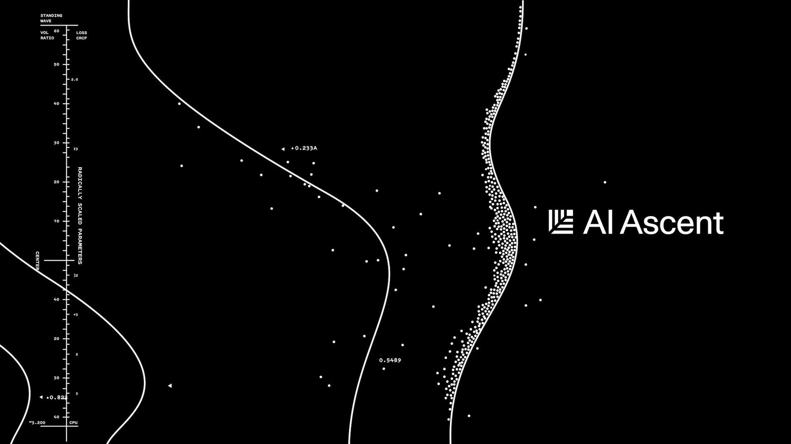

昨晚睡前看了Andrej Karpathy在AI Ascent的talk视频，有点被shock到了，久久不能入睡（AI Ascent是红杉资本主办的AI创业和投资圈的“风向标级闭门峰会”）。正好我前阵子也有LLM是一种new computer的感觉，而AK说的更直接：这不仅是可以给已经能做的提效，而是打开了新世界的大门，能做以前根本想象不到的。

当前的一个共识是：目前进入Agent产品阶段，召唤着这个时代的乔布斯。这是 iOS 的 App Store 前夜，是属于超级产品经理的黄金时代。
然而顺着LLM Is the New Computer逻辑的进一步技术思考是：类比上世纪40~90年代，computer蓬勃发展，关于图灵机、计算机的架构（冯诺依曼）、指令集、编译器都在百花齐放、野蛮生长。这个new compute age，所有工程技术都需要重构或者说是全新创造。
所以不要苛责现在的LLM computer哪里不好用，抱怨agent偶尔有多蠢，面对范式迁移，重要的是要躬身入局，对技术的能力边界和发展趋势有真实的体感，跟上技术的发展，不要被时代的洪流抛弃。
以后能用就尽量多用当前的agent产品，不仅用还要多思考，多了解技术底层。这个视频是Claude Code自动：从youtube拉视频+音频 + Whisper V3模型语音识别 + 制作中英字幕 + 压制视频。并且我也制作成了skill。
我把这场演讲中最击中我的5个核心洞察整理了出来，分享给同样在这个时代洪流中的你。
01 / 范式转移：Software 3.0 与 “LLM作为新计算机”
从未感到如此落后。 从去年 12 月起，随着模型能力的跃升，AI 生成的代码块几乎不再需要人类纠错。这种断崖式的体验让 AK 感到“作为程序员从未如此落后”，并促使他全面转向“Vibe Coding”。
我们正在迈入 Software 3.0 时代。 Software 1.0 是编写明确的规则（写代码）；Software 2.0 是训练神经网络的权重；Software 3.0 则是 Prompting。在这个新纪元里，LLM 变成了新的“计算机（解释器）”，而上下文窗口（Context Window）就是你操控这台计算机的杠杆。
这不仅是提效，而是创造全新可能。 Software 3.0 消灭了中间的应用程序层。例如他的 MenuGen（菜单翻译器）项目，在旧范式下需要写代码、做 OCR、部署服务器；但在新范式下，只需要把菜单照片扔给大模型，模型就能直接渲染出带图的新菜单。很多以前无法想象的“非结构化信息处理”现在成为了可能。
未来的计算形态将发生反转。 在 20 世纪 50 和 60 年代的计算早期，人们并不确定未来的计算机应该长得像“计算器”还是像“神经网络”。历史上我们选择了“计算器”（即经典计算）的道路，导致现在的神经网络是虚拟化运行在现有计算机之上的。但随着 LLM 成为新计算机，这种架构可能会完全反转——神经网络将成为控制一切的“主进程（Host Process）”，而传统的 CPU 反而沦为处理历史遗留确定性任务的“协处理器（Co-processor）”。
02 / 锯齿状智能（Jagged Intelligence）与可验证性（Verifiability）
本质上，传统计算机擅长自动化你能“明确说明（Specify）”的东西，而 LLM 擅长自动化你能“验证（Verify）”的东西（比如代码运行是否报错、数学题对不对）。
预训练模型学习的是统计概率分布，而 RL（强化学习）如同电路连接，在上面建立快速连接。
如果你工作在被大厂用海量数据和 RL 强化过的“电路”里（如写代码），你会感觉像光速一样快。如果你处于数据分布之外（缺乏 RL 强化），模型就会显得很蠢。
这里藏着给创业者的巨大红利： 如果你所在的领域是“可验证”的，哪怕大厂还没盯上，你完全可以自己构建 RL 环境并按下“微调”按钮，从而获得一个极其强大的专属模型。
03 / Vibe Coding (下限) vs. Agentic Engineering (上限)
现在的开发模式正在发生严重的两极分化。
一方面是 “Vibe Coding” 的兴起。只要有想法，用自然语言就能写代码，这极大地拉高了大众参与软件开发的下限。
但另一方面，为了在不牺牲专业软件质量和安全性的前提下走得更快，我们需要一门全新的学科——智能体工程（Agentic Engineering）。
未来的顶尖工程师，不再是能手写红黑树的人，而是能协调一群强大但偶尔犯错的 Agent 的指挥官。未来的大厂面试，可能不再是做算法题，而是让你搭一个 Agent 版的 Twitter，然后用 10 个高级 AI 去疯狂攻击它，看你的架构能不能扛得住。
04 / 人类的核心价值：品味、判断与理解
在这个连代码都可以自动生成的时代，人类到底还有什么用？
AK 的答案很犀利：目前的 Agent 只是一个记忆力超群但缺乏常识的“实习生”。人类必须负责顶层设计、审美（Aesthetics）、判断力（Judgment）和品味（Taste）。
忘掉那些繁琐的 API 吧。 你不需要再死记硬背 Pandas 或 PyTorch 的参数细节，但你必须懂底层的工程逻辑（比如内存是如何分配的，张量视图是如何运作的），这样才能对“实习生”提出正确的需求。
随着智能变得越来越廉价，你可以把“思考”的过程外包给 AI，但你永远无法外包“理解”。人类，依然是决定“我们要建什么”以及“为什么有价值”的唯一瓶颈
05 / 幽灵与 Agent 原生世界
最后，我们需要重新认识 AI 的本质。
它们是幽灵，不是动物。它们没有内在动机、好奇心或进化本能，它们只是被数据和奖励函数塑造的统计模拟电路。理解了这一点，我们就不会对它们抱有拟人化的错误期待。
目前的 API 和开发文档，依然是“写给人类看的”，充满了废话和引导。但未来的世界，注定是Agent-Native的。
基础设施将被拆分为适合 Agent 直接调用的“传感器”和“执行器”。你的 Agent 会直接与别人的 Agent 沟通并完成任务。